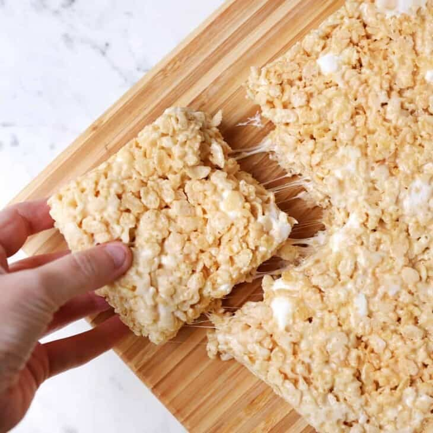

Rice Krispies Treat

When I was 11 or 12, I remember going to a birthday party that was held in a cooking studio.
That was where I learnt to make these sugar-loaded chewy treats.
Ingredients
- 150g Rice Krispies Cereal
- 3 Tablespoons Salted Butter
- 300g Marshmallows
Method
- Grease a 20cm x 30cm pan very well.
- Melt butter in a large pot over low heat.
- Pour marshmallows into pot and melt over low heat. Stir occasionaly to prevent burning.
- When the marmallows have turned runny (like a thick batter), pour in the rice krispies treat and mix well.
- Pour the mixture into the pan and flatten with the back of damp spoon.
- Let it cool completely before cutting it into squares.
Homepage